Asignatura: Telemática
Plataforma de simulación: Cisco Packet Tracer
Escenario: grupo de k = 2 estudiantes => n = k + 1 = 3 sistemas autónomos (AS1, AS2 y AS99)
Integrantes: David Cuadros y Felipe Gomez
Se implementa la interconexión de dos AS de clientes (AS1 y AS2) con un AS proveedor de servicios (AS99), que aloja un servidor DNS y un servidor WEB. Las decisiones principales son:
AS1 y AS2 usan las mismas redes 10.0.0.0/24 y 172.16.0.0/24 (Restricción 5.a).VLAN 10 = 10.0.0.0/24, VLAN 20 = 172.16.0.0/24 y VLAN 30 = red del servidor DHCP. Un servidor DHCP por AS entrega las direcciones a las dos VLAN de clientes a través de ip helper-address en R1 y R3.AS1 (proceso 1) y en AS99 (proceso 99), y RIPv2 en AS2.AS1-R4 y AS2-R2) traducen todas sus redes internas a un bloque público exclusivo por cliente (198.51.100.0/29 para AS1, 198.51.100.8/29 para AS2) y solo esos bloques se anuncian por eBGP al AS99.AS99-R6 habla BGP dentro del AS99. R6 anuncia el agregado 203.0.113.0/24 a los clientes e inyecta en OSPF 99 una ruta por defecto hacia sí mismo, de modo que R5 y R7 le entregan el tráfico de retorno y R6 decide el AS de destino con su tabla BGP. AS1 (OSPF 1) AS2 (RIPv2)
[PC1] [PC2] [DHCP .100] [PC1] [PC2] [DHCP .100]
| V10 | V20 | V30 | V10 | V20 | V30
[SW1] [ SW2 ] [SW1] [ SW2 ]
| | troncal 802.1Q | | troncal 802.1Q
[R1]--------------[R3] [R1]--------------[R3]
| 192.168.1.4/30 | 192.168.1.8/30 | 192.168.2.4/30 | 192.168.2.8/30
[R2]--------------[R4] <- borde AS1 [R2]--------------[R4]
192.168.1.12/30 | borde AS2 -> | 192.168.2.12/30
| Se0/0/0 Se0/0/0 |
200.1.99.0/30 \ eBGP eBGP / 200.2.99.0/30
\ /
Se0/0/0 \ / Se0/0/1
[ AS99-R6 ]
Gi0/0 / \ Gi0/1
203.0.113.0/30 203.0.113.4/30
/ \
[AS99-R5]-----------------------[AS99-R7]
| 203.0.113.8/30 |
203.0.113.64/26 203.0.113.128/26
[DNS .66] [WEB .130]
AS99 (OSPF 99)
Topología real armada en Packet Tracer 9.0.1 (archivo Entrega_2_Telematica.pkt; todos los enlaces en verde):
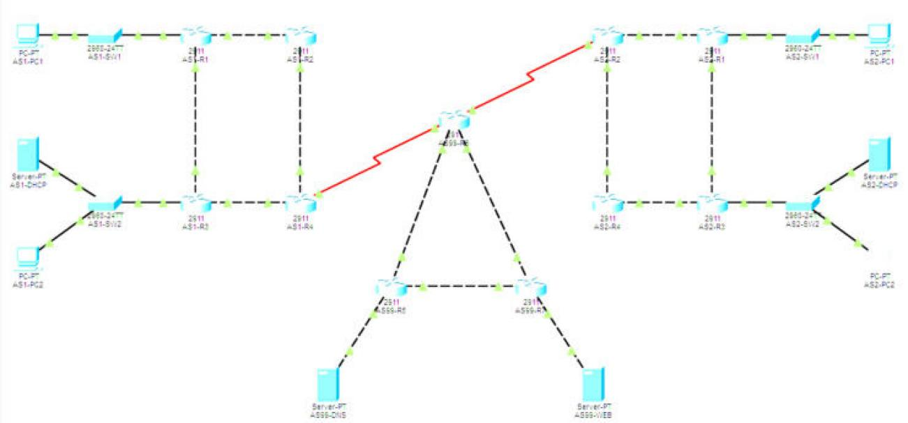
Gi0/0, Gi0/1, Gi0/2).AS99-R6 tiene 4 vecinos (AS1, AS2, R5, R7). Se agrega el módulo HWIC-2T y los dos enlaces entre AS se hacen por serial (Se0/0/0 y Se0/0/1), que es además lo típico de un enlace WAN cliente–proveedor. Por la misma razón AS1-R4 y AS2-R2 llevan HWIC-2T. R6 es el extremo DCE (configura clock rate).R3 de cada cliente tiene 4 vecinos (PC de la red 172.16.0.0/24, servidor DHCP, R1 y R4). En lugar de añadir un puerto, se agrega el switch SW2 con dos VLAN (20 para clientes y 30 para el servidor DHCP) y R3 enruta entre ellas con Router-on-a-Stick (subinterfaces Gi0/0.20 y Gi0/0.30 sobre un troncal 802.1Q). Así se aplica la segmentación por VLAN (Req. 1.c) en ambos lados del AS. Es la única diferencia con la Figura 1: el PC de 172.16.0.0/24 y el servidor DHCP siguen colgando de R3, pero a través de un switch.| Origen | Destino | Cable | Red | Uso |
|---|---|---|---|---|
ASx-PC1 Fa0 |
ASx-SW1 Fa0/1 |
Directo | 10.0.0.0/24 (VLAN 10) |
Host red 10 |
ASx-SW1 Fa0/2 |
ASx-R1 Gi0/0 |
Directo | 10.0.0.0/24 (VLAN 10) |
Gateway + DHCP Relay |
ASx-PC2 Fa0 |
ASx-SW2 Fa0/1 |
Directo | 172.16.0.0/24 (VLAN 20) |
Host red 172 |
ASx-DHCP Fa0 |
ASx-SW2 Fa0/2 |
Directo | 192.168.x.96/29 (VLAN 30) |
Servidor DHCP |
ASx-SW2 Gi0/1 |
ASx-R3 Gi0/0 |
Directo | Troncal 802.1Q (20,30) | Router-on-a-Stick |
ASx-R1 Gi0/1 |
ASx-R3 Gi0/1 |
Cruzado | 192.168.x.0/30 |
IGP |
ASx-R1 Gi0/2 |
ASx-R2 Gi0/2 |
Cruzado | 192.168.x.4/30 |
IGP |
ASx-R3 Gi0/2 |
ASx-R4 Gi0/2 |
Cruzado | 192.168.x.8/30 |
IGP |
ASx-R2 Gi0/1 |
ASx-R4 Gi0/1 |
Cruzado | 192.168.x.12/30 |
IGP |
AS1-R4 Se0/0/0 |
AS99-R6 Se0/0/0 |
Serial (DCE en R6) | 200.1.99.0/30 |
eBGP AS1–AS99 |
AS2-R2 Se0/0/0 |
AS99-R6 Se0/0/1 |
Serial (DCE en R6) | 200.2.99.0/30 |
eBGP AS2–AS99 |
AS99-R6 Gi0/0 |
AS99-R5 Gi0/1 |
Cruzado | 203.0.113.0/30 |
OSPF 99 |
AS99-R6 Gi0/1 |
AS99-R7 Gi0/1 |
Cruzado | 203.0.113.4/30 |
OSPF 99 |
AS99-R5 Gi0/2 |
AS99-R7 Gi0/2 |
Cruzado | 203.0.113.8/30 |
OSPF 99 |
AS99-R5 Gi0/0 |
AS99-DNS Fa0 |
Cruzado | 203.0.113.64/26 |
Red DNS |
AS99-R7 Gi0/0 |
AS99-WEB Fa0 |
Cruzado | 203.0.113.128/26 |
Red WEB |
ASx = AS1 y AS2; x = 1 en AS1 y 2 en AS2.
Criterio: las redes de clientes 10.0.0.0/24 y 172.16.0.0/24 son fijas (enunciado). Para lo que no está definido:
192.168.x.0/24 con x = número del AS (enlaces /30, red del DHCP /29, loopbacks /32 desde .201). Se repite el patrón en ambos AS sin conflicto, porque estas redes nunca salen del AS (se traducen con NAT).198.51.100.0/29 (AS1) y 198.51.100.8/29 (AS2), del rango de documentación RFC 5737.200.<AS cliente>.99.0/30.203.0.113.0/24 (RFC 5737), dividido en /30 para enlaces y /26 para cada servidor.| Dispositivo | Interfaz | IPv4 | Máscara | Observaciones |
|---|---|---|---|---|
AS1-PC1 |
Fa0 | DHCP (10.0.0.x) |
/24 | GW 10.0.0.1, DNS 203.0.113.66 |
AS1-PC2 |
Fa0 | DHCP (172.16.0.x) |
/24 | GW 172.16.0.1, DNS 203.0.113.66 |
AS1-DHCP |
Fa0 | 192.168.1.100 |
/29 | GW 192.168.1.97 |
AS1-R1 |
Gi0/0 | 10.0.0.1 |
/24 | VLAN 10, ip helper-address 192.168.1.100 |
AS1-R1 |
Gi0/1 | 192.168.1.1 |
/30 | hacia R3 |
AS1-R1 |
Gi0/2 | 192.168.1.5 |
/30 | hacia R2 |
AS1-R1 |
Lo0 | 192.168.1.201 |
/32 | RID 1.1.1.1 |
AS1-R2 |
Gi0/1 | 192.168.1.13 |
/30 | hacia R4 |
AS1-R2 |
Gi0/2 | 192.168.1.6 |
/30 | hacia R1 |
AS1-R2 |
Lo0 | 192.168.1.202 |
/32 | RID 1.1.1.2 |
AS1-R3 |
Gi0/0.20 | 172.16.0.1 |
/24 | VLAN 20, ip helper-address 192.168.1.100 |
AS1-R3 |
Gi0/0.30 | 192.168.1.97 |
/29 | VLAN 30, red del DHCP |
AS1-R3 |
Gi0/1 | 192.168.1.2 |
/30 | hacia R1 |
AS1-R3 |
Gi0/2 | 192.168.1.9 |
/30 | hacia R4 |
AS1-R3 |
Lo0 | 192.168.1.203 |
/32 | RID 1.1.1.3 |
AS1-R4 |
Se0/0/0 | 200.1.99.1 |
/30 | ip nat outside, eBGP con AS99 |
AS1-R4 |
Gi0/1 | 192.168.1.14 |
/30 | ip nat inside, hacia R2 |
AS1-R4 |
Gi0/2 | 192.168.1.10 |
/30 | ip nat inside, hacia R3 |
AS1-R4 |
Lo0 | 192.168.1.204 |
/32 | RID 1.1.1.4 |
AS1-R4 |
Lo1 | 198.51.100.1 |
/29 | Bloque público AS1 (pool NAT .2–.6) |
| Dispositivo | Interfaz | IPv4 | Máscara | Observaciones |
|---|---|---|---|---|
AS2-PC1 |
Fa0 | DHCP (10.0.0.x) |
/24 | GW 10.0.0.1, DNS 203.0.113.66 |
AS2-PC2 |
Fa0 | DHCP (172.16.0.x) |
/24 | GW 172.16.0.1, DNS 203.0.113.66 |
AS2-DHCP |
Fa0 | 192.168.2.100 |
/29 | GW 192.168.2.97 |
AS2-R1 |
Gi0/0 | 10.0.0.1 |
/24 | VLAN 10, ip helper-address 192.168.2.100 |
AS2-R1 |
Gi0/1 | 192.168.2.1 |
/30 | hacia R3 |
AS2-R1 |
Gi0/2 | 192.168.2.5 |
/30 | hacia R2 |
AS2-R1 |
Lo0 | 192.168.2.201 |
/32 | |
AS2-R2 |
Se0/0/0 | 200.2.99.1 |
/30 | ip nat outside, eBGP con AS99 |
AS2-R2 |
Gi0/1 | 192.168.2.13 |
/30 | ip nat inside, hacia R4 |
AS2-R2 |
Gi0/2 | 192.168.2.6 |
/30 | ip nat inside, hacia R1 |
AS2-R2 |
Lo0 | 192.168.2.202 |
/32 | BGP RID 2.2.2.2 |
AS2-R2 |
Lo1 | 198.51.100.9 |
/29 | Bloque público AS2 (pool NAT .10–.14) |
AS2-R3 |
Gi0/0.20 | 172.16.0.1 |
/24 | VLAN 20, ip helper-address 192.168.2.100 |
AS2-R3 |
Gi0/0.30 | 192.168.2.97 |
/29 | VLAN 30, red del DHCP |
AS2-R3 |
Gi0/1 | 192.168.2.2 |
/30 | hacia R1 |
AS2-R3 |
Gi0/2 | 192.168.2.9 |
/30 | hacia R4 |
AS2-R3 |
Lo0 | 192.168.2.203 |
/32 | |
AS2-R4 |
Gi0/1 | 192.168.2.14 |
/30 | hacia R2 |
AS2-R4 |
Gi0/2 | 192.168.2.10 |
/30 | hacia R3 |
AS2-R4 |
Lo0 | 192.168.2.204 |
/32 |
| Dispositivo | Interfaz | IPv4 | Máscara | Observaciones |
|---|---|---|---|---|
AS99-R6 |
Se0/0/0 | 200.1.99.2 |
/30 | DCE, eBGP con AS1 |
AS99-R6 |
Se0/0/1 | 200.2.99.2 |
/30 | DCE, eBGP con AS2 |
AS99-R6 |
Gi0/0 | 203.0.113.1 |
/30 | hacia R5 |
AS99-R6 |
Gi0/1 | 203.0.113.5 |
/30 | hacia R7 |
AS99-R6 |
Lo0 | 203.0.113.206 |
/32 | RID 99.99.99.6 |
AS99-R5 |
Gi0/0 | 203.0.113.65 |
/26 | Gateway del DNS |
AS99-R5 |
Gi0/1 | 203.0.113.2 |
/30 | hacia R6 |
AS99-R5 |
Gi0/2 | 203.0.113.9 |
/30 | hacia R7 |
AS99-R5 |
Lo0 | 203.0.113.205 |
/32 | RID 99.99.99.5 |
AS99-R7 |
Gi0/0 | 203.0.113.129 |
/26 | Gateway del WEB |
AS99-R7 |
Gi0/1 | 203.0.113.6 |
/30 | hacia R6 |
AS99-R7 |
Gi0/2 | 203.0.113.10 |
/30 | hacia R5 |
AS99-R7 |
Lo0 | 203.0.113.207 |
/32 | RID 99.99.99.7 |
AS99-DNS |
Fa0 | 203.0.113.66 |
/26 | GW 203.0.113.65 |
AS99-WEB |
Fa0 | 203.0.113.130 |
/26 | GW 203.0.113.129, www.as99.com |
SW1 pone a los hosts de 10.0.0.0/24 en la VLAN 10; el puerto hacia R1 es de acceso en esa VLAN.SW2 pone a los hosts de 172.16.0.0/24 en la VLAN 20 y al servidor DHCP en la VLAN 30. El puerto hacia R3 es un troncal 802.1Q que transporta ambas VLAN; R3 tiene una subinterfaz por VLAN (encapsulation dot1Q 20 / 30). Clientes y servidor quedan en dominios de broadcast separados y el tráfico entre ellos pasa por el router.DHCPDISCOVER es un broadcast que un router no reenvía, en R1 Gi0/0 y R3 Gi0/0.20 se configura ip helper-address <IP del DHCP>. El router reenvía la solicitud por unicast al servidor y coloca en el campo giaddr la IP de la interfaz que la recibió (10.0.0.1 o 172.16.0.1). El servidor elige el pool cuya red coincide con giaddr. Por eso el servidor DHCP de cada AS tiene un pool para 10.0.0.0/24 y otro para 172.16.0.0/24.passive-interface (no envían Hellos a la LAN). AS1-R4 propaga la salida al AS99 con default-information originate, a partir de su ruta estática por defecto.no auto-summary (hay máscaras /24, /29, /30 y /32 que no deben resumirse por clase). AS2-R2 propaga la ruta por defecto con default-information originate.Con esto se cumple que no haya un único IGP en toda la topología.
Problema. Si AS1 y AS2 anunciaran 10.0.0.0/24 y 172.16.0.0/24 a AS99, R6 recibiría el mismo prefijo desde dos AS, instalaría solo un mejor camino y las respuestas de DNS/WEB para el otro cliente se enviarían al AS equivocado.
Solución: PAT en el borde + un prefijo público único por cliente anunciado por eBGP.
| Cliente | Router de borde | Bloque público | Pool PAT | Anunciado por eBGP |
|---|---|---|---|---|
| AS1 | AS1-R4 |
198.51.100.0/29 (Lo1 = .1) |
.2 – .6 |
198.51.100.0/29 |
| AS2 | AS2-R2 |
198.51.100.8/29 (Lo1 = .9) |
.10 – .14 |
198.51.100.8/29 |
Ejemplo: AS1-PC1 (10.0.0.10) y AS2-PC1 (10.0.0.10) consultan el DNS al mismo tiempo. AS99 ve como origen 198.51.100.2 y 198.51.100.10, que son distintos y apuntan cada uno a su AS en la tabla BGP de R6. Las IP internas no cambian (Restricción 5.a) y la conectividad con AS99 es extremo a extremo (Restricción 5.b).
La interfaz Loopback1 hace que el bloque /29 esté en la tabla de rutas del router de borde, requisito para que el comando network ... mask ... de BGP lo anuncie.
AS1-PC1 intenta llegar a 10.0.0.x de AS2, su propia máscara le dice que ese destino está en su LAN y lo busca por ARP sin pasar por el gateway. Si intenta llegar a 172.16.0.x, AS1-R1 tiene esa red en su tabla OSPF (está dentro de AS1) y la ruta específica le gana a la ruta por defecto, así que el paquete nunca sale del AS. Además, AS99 no conoce ninguna red privada de los clientes.R6 reenvía por eBGP el prefijo de cada cliente al otro. Un host de AS1 puede hacer ping a 198.51.100.9 (Loopback1 de AS2-R2) y viceversa. Lo que no se puede es iniciar una conexión hacia un host interno del otro cliente, porque el PAT dinámico solo crea traducciones para el tráfico que sale. Para permitirlo haría falta NAT estático o reenvío de puertos en el borde destino (por ejemplo, 198.51.100.11 → 10.0.0.11 en AS2-R2).En un ISP real, R5, R6 y R7 formarían una malla iBGP (o usarían un route reflector) con next-hop-self en R6, y aprenderían así los prefijos de los clientes. Packet Tracer no permite montar esa solución: no ofrece una implementación completa de iBGP ni next-hop-self.
Solución funcional aplicada:
R6 es el único router de AS99 con BGP. Tiene las sesiones eBGP con AS1 (200.1.99.1) y AS2 (200.2.99.1).R6 anuncia el agregado 203.0.113.0/24, anclado a la ruta estática ip route 203.0.113.0 255.255.255.0 Null0 (BGP solo anuncia prefijos que están en la tabla de rutas). Las subredes más específicas del DNS (/26) y del WEB (/26) se aprenden por OSPF; por coincidencia del prefijo más largo, el tráfico va al servidor y Null0 solo descarta destinos no asignados.R6 inyecta en OSPF 99 una ruta por defecto (ip route 0.0.0.0 0.0.0.0 Null0 + default-information originate). En las pruebas se comprobó que el IOS de Packet Tracer rechaza la palabra always (% Invalid input detected) y que, sin ella, OSPF solo anuncia el 0.0.0.0/0 si R6 tiene una ruta por defecto en su tabla; por eso se agregó la ruta estática a Null0. Sin ese cambio, R5 y R7 quedaban con Gateway of last resort is not set y los ping de los PC al DNS fallaban. La ruta a Null0 no afecta a los clientes, porque las rutas BGP 198.51.100.0/29 y 198.51.100.8/29 son más específicas. R5 y R7 envían a R6 cualquier destino fuera de AS99, y R6 sabe por BGP si 198.51.100.0/29 está en AS1 o si 198.51.100.8/29 está en AS2. Así, la información de los clientes vive solo en BGP y no hace falta redistribuir BGP en OSPF ni configurar rutas estáticas hacia los clientes.La solución no es idéntica a un ISP real (Req. 3.c), pero es funcional y escala: un tercer cliente solo requiere una sesión eBGP más en R6.
Todas las capturas son reales, tomadas en Cisco Packet Tracer 9.0.1 sobre
Entrega_2_Telematica.pkt. Todas las pruebas de esta sección pasaron después de una corrección enAS99-R6(ver 5.4 y 4.5).
ipconfig /all.AS1-PC1 y AS2-PC1 reciben 10.0.0.10/24 con GW 10.0.0.1; AS1-PC2 y AS2-PC2 reciben 172.16.0.10/24 con GW 172.16.0.1; DNS 203.0.113.66 en todos. El servidor DHCP que responde es 192.168.1.100 en AS1 y 192.168.2.100 en AS2, es decir, el relay (ip helper-address) de R1 y R3 funciona. Los dos PC1 quedan con la misma IP 10.0.0.10, lo que se aprovecha en la prueba 5.6.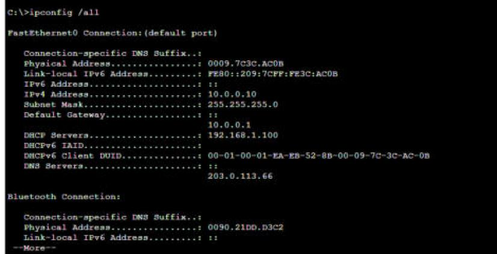
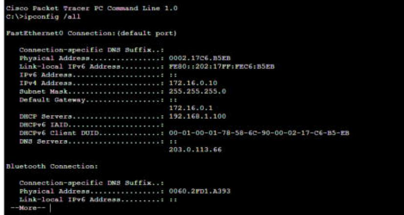
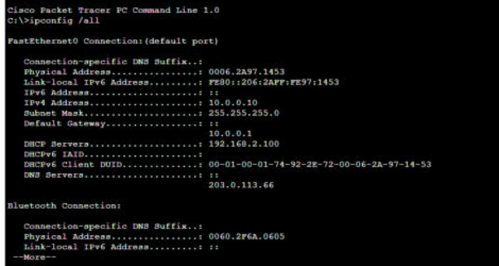
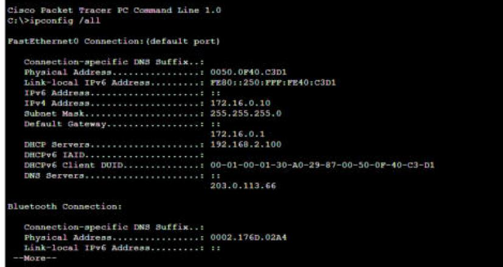
show vlan brief en AS1-SW1: Fa0/1–Fa0/24 en VLAN 10 (las VLAN 20 y 30 existen sin puertos).show vlan brief y show interfaces trunk en AS1-SW2 y AS2-SW2: Fa0/1 y Fa0/3–24 en VLAN 20, Fa0/2 en VLAN 30, y Gi0/1 troncal 802.1Q (trunking) con VLAN permitidas y activas 20,30.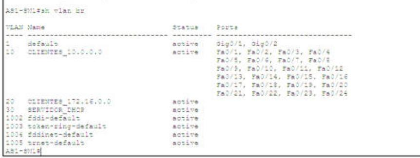
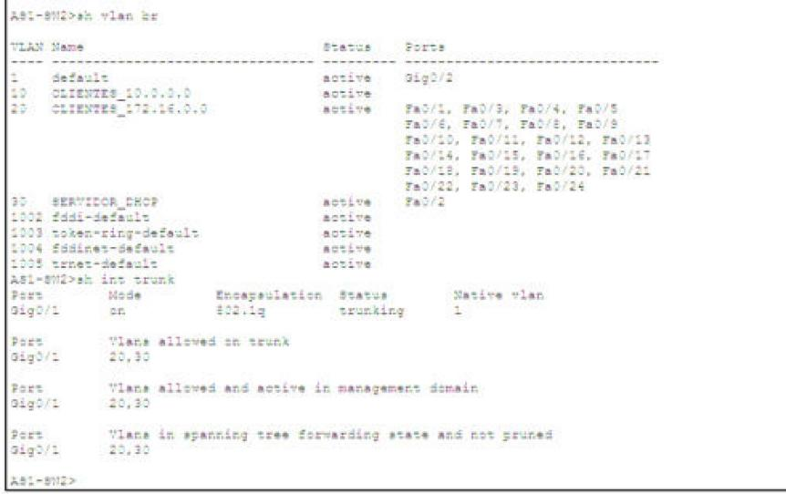
show ip route en AS1-R1: rutas O hacia 172.16.0.0/24, 192.168.1.96/29, los /30 y las loopbacks, y O*E2 0.0.0.0/0 originada por R4 (aprendida por R2 y por R3 con igual costo). show ip ospf neighbor: 1.1.1.3 y 1.1.1.2 en estado FULL.show ip route en AS2-R1: rutas R hacia 172.16.0.0/24, 192.168.2.96/29, los /30 y las loopbacks, y R* 0.0.0.0/0 vía 192.168.2.6 (R2).show ip ospf neighbor en AS99-R6: 99.99.99.5 y 99.99.99.7 en FULL.AS1-PC1 y AS2-PC1 a 172.16.0.1, a ASx-PC2 (172.16.0.10), a 192.168.x.100 y a las loopbacks de R2, R3 y R4: todos responden. El primer eco hacia 172.16.0.10 se pierde por la resolución ARP inicial (comportamiento normal en Packet Tracer).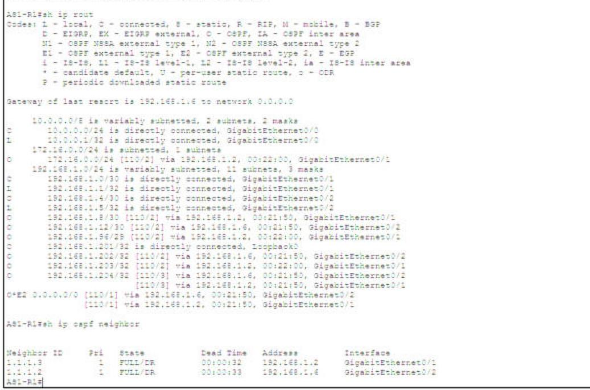
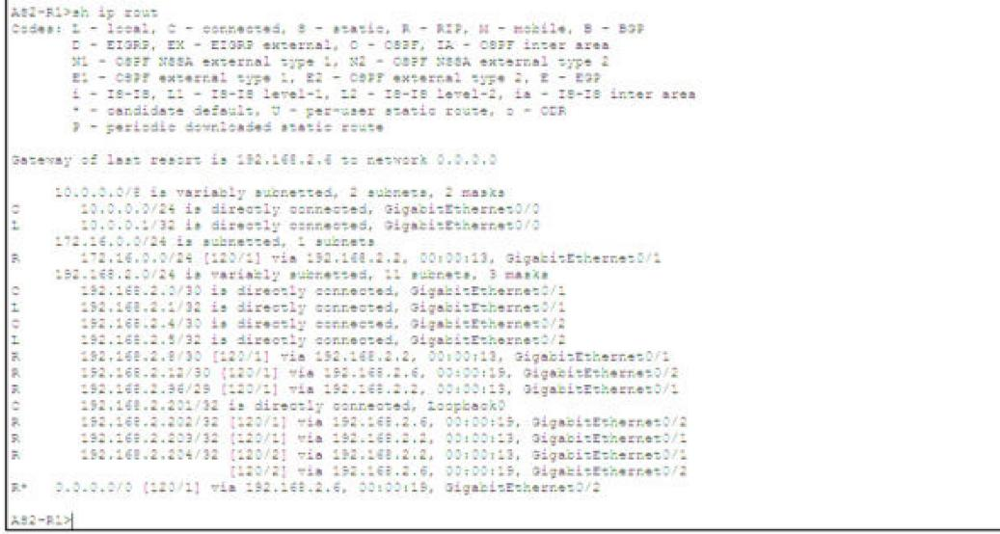
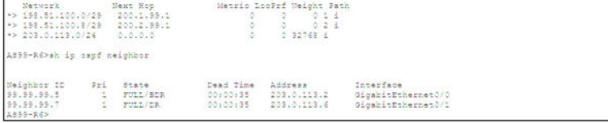
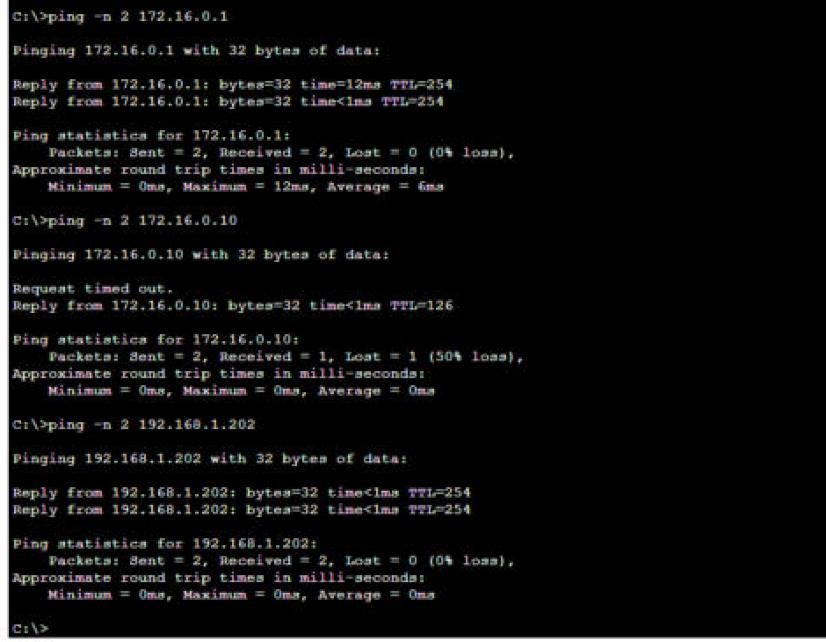
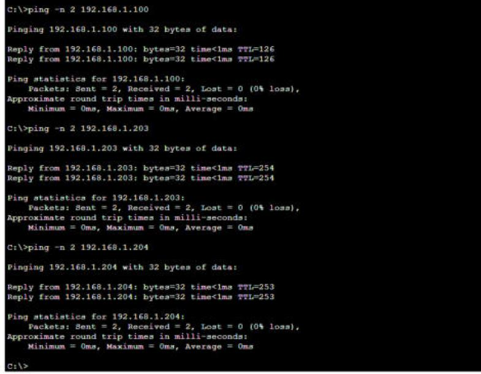
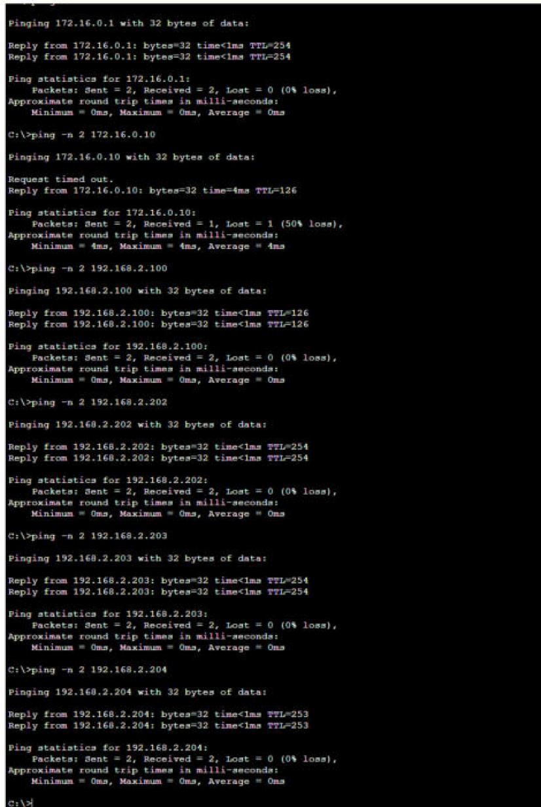
show ip bgp summary y show ip bgp en AS99-R6: las dos sesiones eBGP (200.1.99.1 AS 1 y 200.2.99.1 AS 2) están establecidas. Tabla obtenida: Network Next Hop Metric LocPrf Weight Path
*> 198.51.100.0/29 200.1.99.1 0 0 0 1 i
*> 198.51.100.8/29 200.2.99.1 0 0 0 2 i
*> 203.0.113.0/24 0.0.0.0 0 0 32768 i
show controllers serial0/0/0 y serial0/0/1 en AS99-R6: ambos DCE V.35, clock rate 2000000.show ip bgp en AS1-R4: 203.0.113.0/24 con path 99 i y 198.51.100.8/29 con path 99 2 i; en AS2-R2, lo simétrico (198.51.100.0/29 con path 99 1 i).show ip route en AS99-R5: O*E2 0.0.0.0/0 [110/1] via 203.0.113.1 (R6).AS1-PC1 a 203.0.113.66 fallaba (100 % de pérdida). show ip nat translations en AS1-R4 mostraba la traducción, show ip bgp estaba correcto y AS99-R6 sí alcanzaba al DNS y al WEB; pero show ip route en AS99-R5 decía Gateway of last resort is not set, así que la respuesta del DNS hacia 198.51.100.2 no tenía ruta. La causa fue que Packet Tracer rechaza default-information originate always. Se agregó ip route 0.0.0.0 0.0.0.0 Null0 y default-information originate en R6 (archivo AS99_R6.ios corregido) y desde entonces todas las pruebas pasan. Además, se volvieron a aplicar todos los .ios verificando la salida de cada línea: ninguna otra línea es rechazada por Packet Tracer.show ip nat translations en AS1-R4 y AS2-R2 tras navegar desde los PC (ver 5.6).AS1-PC1 a 198.51.100.9 (Loopback1 de AS2-R2) y desde AS2-PC1 a 198.51.100.1 (Loopback1 de AS1-R4): responden, lo que confirma el punto 4.4 (solo hay alcance entre los bloques públicos, nunca entre las redes internas).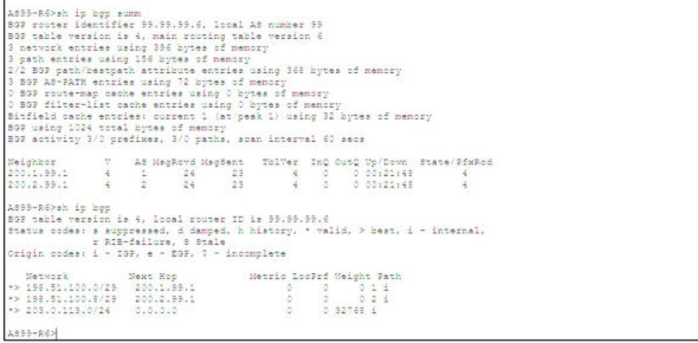
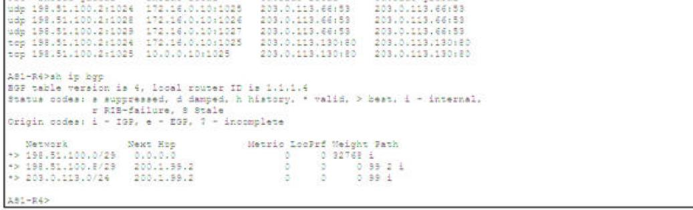
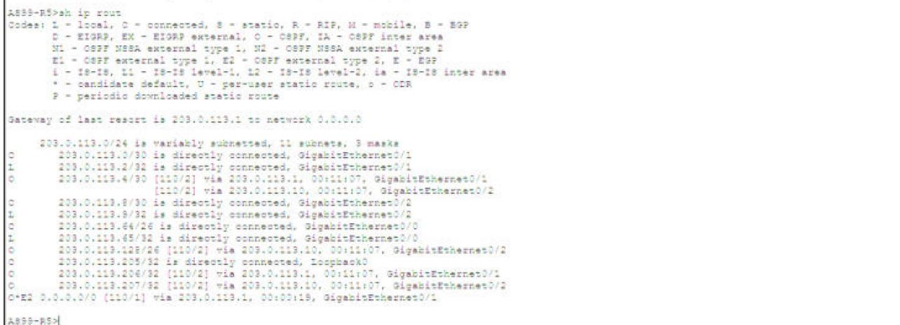
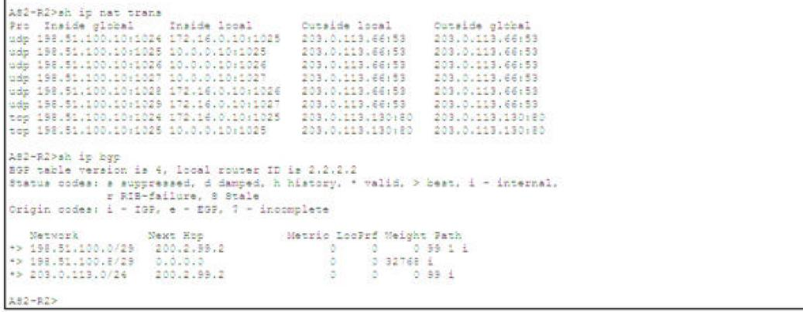
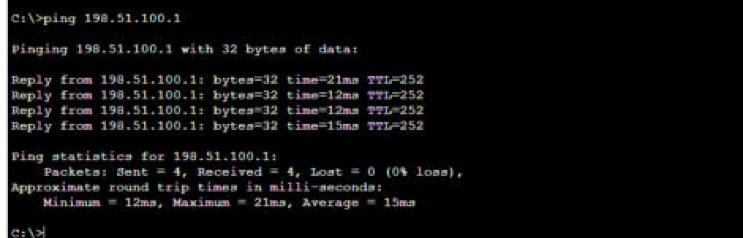
Desde los 4 PC (todas las pruebas pasaron):
ping 203.0.113.66 y ping 203.0.113.130 → 4/4 respuestas.nslookup www.as99.com → Server: [203.0.113.66], Address: 203.0.113.130.ping www.as99.com → resuelve a 203.0.113.130 y responde 4/4.http://www.as99.com → carga la página de AS99-WEB (AS99 - Proveedor de Servicios Centralizados).AS1-PC1
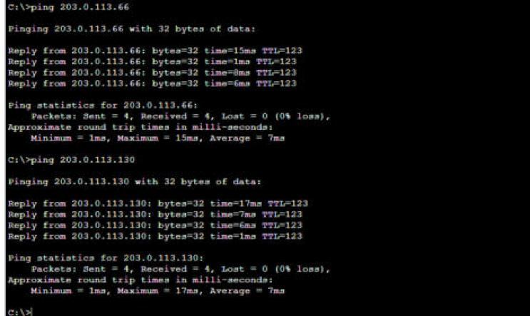
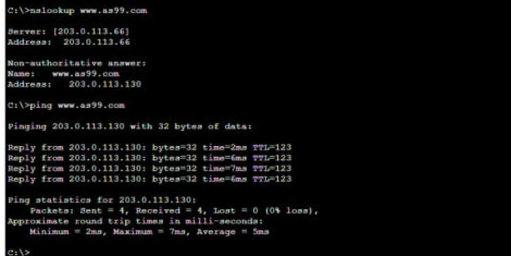
AS1-PC2
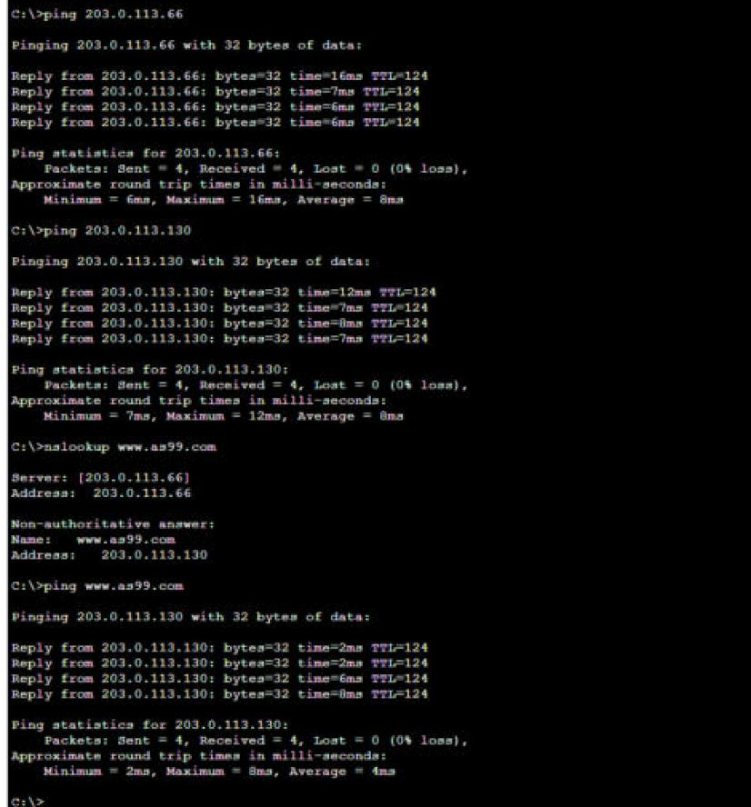
AS2-PC1
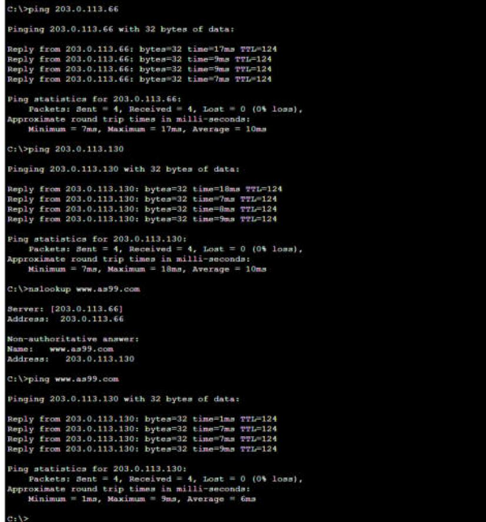
AS2-PC2
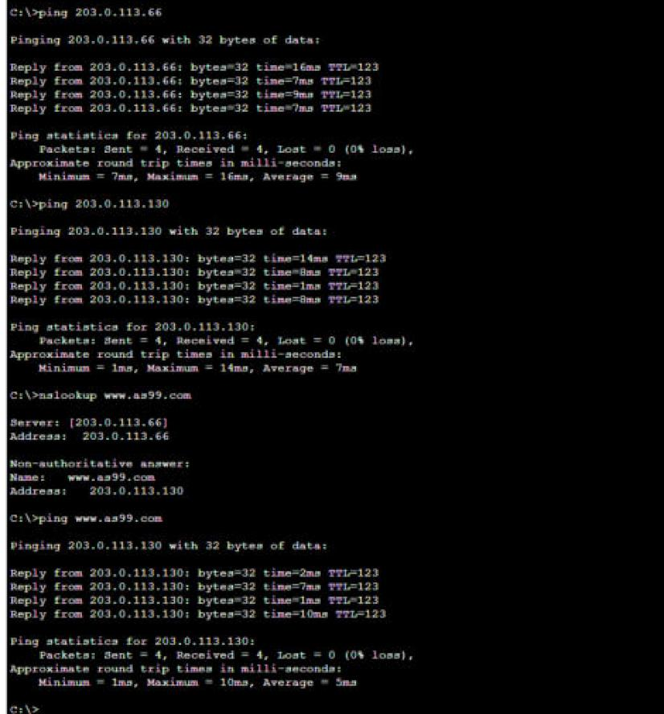
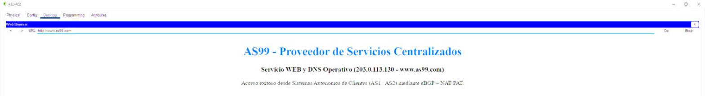
AS1-PC1 y AS2-PC1 tienen la misma IP interna (10.0.0.10) y ambos cargaron http://www.as99.com (capturas de navegador de 5.5). show ip nat translations en los dos bordes muestra la misma dirección y puerto internos con distinta IP global:
| Borde | Inside local | Inside global | Outside |
|---|---|---|---|
AS1-R4 |
10.0.0.10:1025 |
198.51.100.2:1025 |
203.0.113.130:80 |
AS2-R2 |
10.0.0.10:1025 |
198.51.100.10:1025 |
203.0.113.130:80 |
Lo mismo ocurre con AS1-PC2 y AS2-PC2 (172.16.0.10), traducidos a 198.51.100.2 y 198.51.100.10, y con las consultas DNS (UDP 53). Las capturas son las de AS1-R4 y AS2-R2 en 5.4.
R6 y propagando una ruta por defecto en OSPF dentro de AS99.